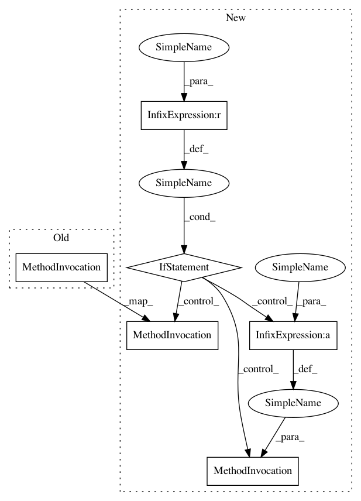

c2abce56431e874d0968658bffd56d589036445c,mlxtend/utils/counter.py,Counter,update,#Counter#,43
Before Change
self.curr_iter += 1
out = "%d iter | %d sec" % (self.curr_iter, time.time() -
self.start_time)
self.stream.write("\r%s" % out)
self.stream.flush()
After Change
out = "%d iter | %s sec" % (self.curr_iter,
self.precision % (self.end_time
- self.start_time))
if self.name is None:
self.stream.write("\r%s" % out)
else:
self.stream.write("\r %s: %s" % (self.name, out))
self.stream.flush()
In pattern: SUPERPATTERN
Frequency: 1
Non-data size: 6
Instances
Project Name: rasbt/mlxtend
Commit Name: c2abce56431e874d0968658bffd56d589036445c
Time: 2017-11-04
Author: mathew@mathewsavage.com
File Name: mlxtend/utils/counter.py
Class Name: Counter
Method Name: update